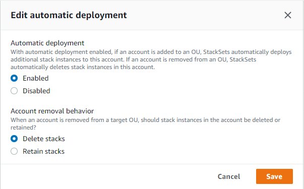

サービスマネージド型のアクセス許可を持つスタックセットの自動デプロイの管理
自動デプロイを有効にすると、今後ターゲットの組織または組織単位 (OU) に追加されるアカウントに StackSets が自動デプロイを行います。スタックの保持を有効にすると、ターゲット OU からアカウントが削除された場合でも、アカウントのスタックリソースは保持されます。スタックセットを作成したときに指定した自動デプロイ設定は、いつでも調整できます。
注記
上書きされたパラメータ値は、ターゲット OU とその子 OU に現在存在するアカウントにのみ適用されます。今後ターゲット OU とその子 OU に追加されるアカウントでは、スタックセットのデフォルト値が使用され、オーバーライドされた値は使用されません。
AWS CloudFormation コンソールを使用して自動デプロイを管理する
-
https://console.aws.amazon.com/cloudformation.
で AWS CloudFormation コンソールを開きます。 -
ナビゲーションペインから [StackSets] を選択します。
-
[StackSets] ページで、「サービスマネージド型のアクセス許可を持つスタックセットの作成」で作成したスタックセットを選択します。
-
スタックセットを選択した状態で、[Actions] (アクション) メニューから [Edit automatic deployment] (自動デプロイの編集) を選択します。自動デプロイはスタックセットレベルで設定されます。OU、アカウント、リージョンを選択して自動デプロイを調整することはできません。
![スタックセットを選択し、[アクション] メニューから [自動デプロイの編集] を選択します。](images/console-stackset-edit-auto-deploy.png)
-
モーダルダイアログの [Edit automatic deployment (自動デプロイの編集)] で、[Automatic deployment (自動デプロイ)] と [Account removal behavior (アカウントの削除の動作)] の設定を行います。
注記
[Retain stacks (スタックの保持)] を選択すると、スタックインスタンスはスタックセットから削除されますが、スタックとそれに関連付けられたリソースは保持されます。リソースは現在の状態のままですが、スタックセットには含まれなくなります。
-
[Save (保存)] を選択します。
AWS CLI を使用して自動デプロイを管理する
-
AWS CLIを開きます。
-
サービスマネージド型のアクセス許可を持つスタックセットの作成 で作成したスタックセットを設定して
update-stack-setコマンドを実行します。自動デプロイはスタックセットレベルで設定されます。スタックセットの更新で —auto-deployment を指定した場合、—deployment-targets または —regions を指定することはできません。aws cloudformation update-stack-set --stack-set-nameStackSet_myApp--auto-deployment Enabled=false -
ステップ 2 で
update-stack-set出力の一部として返されたoperation-idを使用して、describe-stack-set-operationを実行し、スタックセットが正常に更新されたことを確認します。aws cloudformation describe-stack-set-operation --operation-idoperation_ID
自動デプロイの例
自動デプロイを有効にすると、アカウントがターゲットの組織または OU に追加されたとき、ターゲットの組織または OU から削除されたとき、ターゲット OU 間で移動したときにトリガーされます。
たとえば、スタックセットの StackSet1 は us-east-1 リージョンの OU OU1 をターゲットにします。スタックセットの StackSet2 は us-east-1 リージョンの OU OU2 をターゲットにします。OU1 にはアカウント AccountA が含まれます。
自動デプロイを有効にして AccountA をOU1 から OU2 に移動すると、StackSets は自動的に削除オペレーションを実行して StackSet1 インスタンスを AccountA から削除し、StackSet2 インスタンスを AccountA に追加する作成オペレーションをキューに入れます。